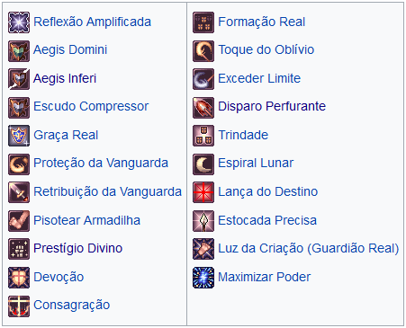
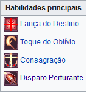
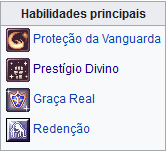
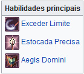

Guardiões Reais

Os Guardiões Reais surgiram três séculos atrás, na época em que Glast Heim foi construída.
O regente de Rune-Midgard na época, Rei Schmitz Von Walther, sabia da importância de preparar uma força especial para lidar com a ameaça constante dos inimigos da nação.
Domine o uso da lança e aprenda diversas novas formas de ataque.
Use poderes sagrados para aumentar suas habilidades e causar dano aos seus inimigos.
Una-se a outros Guardiões Reais para aumentar seus poderes, e monte em um forte e imponente Grifo!
Construção do Personagem

Guardiões Reais possuem várias construções de habilidades e atributos diferentes entre si. Essas construções são conhecidas popularmente como build.
As builds giram em torno de equipamentos que são atualizados constantemente, gerando uma imensa variedade de formas para montar seu personagem. Recomendo que você pesquise nos fóruns e grupos afora para detalhes mais específicos de cada build de seu personagem, como o ragnaplace, por exemplo.
As construções de personagem abaixo são sugestões básicas, sem levar em consideração os equipamentos a serem adquiridos pelos jogadores.
Lansquenetes
Focado no dano de Lança do Destino e Toque do Oblívio, aliado a alta velocidade de ataque.
Conta com habilidades de autossuficiência - como a Consagração, para potencializar o personagem.
Construção popular devido à rápida evolução e eficiência na caçada de MVPs.

| Atributo | Qtd. | Observações | ||||||||
|---|---|---|---|---|---|---|---|---|---|---|
| FOR | 90 | - | 120 | |||||||
| AGI | 90 | - | 120 | |||||||
| VIT | 90 | - | 110 | 100-120 se usar o combo do Tapa-Olho Cósmico | ||||||
| INT | 1 | - | 50 | |||||||
| DES | 90 | - | 100 | |||||||
| SOR | 1 | - | 43 | |||||||
Redentores
Voltada para o suporte, muito útil na Guerra do Emperium e para evoluir em grupos.
Utilizam habilidades defensivas e de suporte, como Proteção da Vanguarda e Prestígio Divino, além de habilidades das classes anteriores, como Redenção.
Ainda podem optar por algumas habilidades ofensivas ou que atrapalhem os inimigos.

| Atributo | Qtd. | Observações | ||||||||
|---|---|---|---|---|---|---|---|---|---|---|
| FOR | 50 | - | 90 | |||||||
| AGI | 65 | - | 90 | |||||||
| VIT | 100 | - | 130 | |||||||
| INT | 70 | - | 80 | 120, se usar o combo do Paraíso | ||||||
| DES | 60 | - | 90 | |||||||
| SOR | 1 | - | 50 | |||||||
Hoplitas
São Guardiões Reais especializados no uso de Exceder Limite, habilidade que pode atingir danos relevantes na Guerra do Emperium e no PvP.
Foca-se no aumento de dano físico, de taxa de críticos e de dano crítico.
Usa também Lança do Destino e Estocada Precisa para complementar o dano, caso esteja equipado com lança.

| Atributo | Qtd. | Observações | ||||||||
|---|---|---|---|---|---|---|---|---|---|---|
| FOR | 80 | - | 120 | |||||||
| AGI | 1 | - | 70 | |||||||
| VIT | 80 | - | 100 | |||||||
| INT | 1 | - | 120 | |||||||
| DES | 60 | - | 90 | |||||||
| SOR | 60 | - | 120 | |||||||